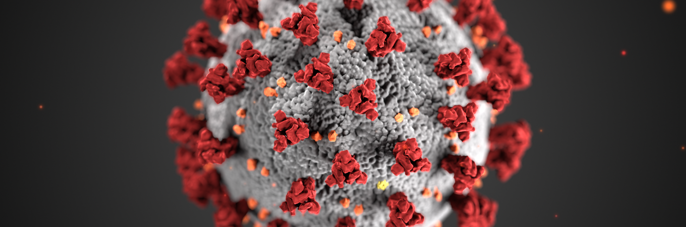

Welcome to the website of the Old Road Journal Club. You will be able to find every information related to the ORJC meetings.
The Old Road Campus Journal Club (ORJC) is an informal get together session for PhD students to discuss the latest research findings in the field of biomedical research, and share work that we’ve done! The journal club has a focus on computational biology, but we also appreciate the diversity of the field and welcome anything related to genetics and genomics. Join us every other Friday at the Wellcome Centre for Human Genetics or Big Data Institute for cool science and pizza/snacks & drinks!
ORJC is a great place to meet your fellow DPhil students, talk and exchange expertise. Come to one of the meetings and see for yourself! :)
The Journal Club is presently run by Andrew and Kasia.
We have an active mailing list to which one can subscribe by sending an email with subscribe dphil-journal-club in subject line to sympa@maillist.ox.ac.uk.
Thanks to generosity of the Wellcome Trust, we will have pizza üçï at the lunchtime meetings and thanks to the BDI snacks üç™ at the afternoon meetings!

To comply with life saving social distancing we have decided to move Journal Club meetings online.
We are meeting on Zoom. Details of the next meeting:
Time: May 22, 2020 12:30 PM London
Link: Zoom link
Meeting ID: 757 471 2488 Password: contact us or, if you subscribe to the mailing list, check your inbox.
Refreshments and drinks are supported by the Wellcome Trust, Wellcome Centre for Human Genetics and the Big Data Institute. We are very welcomed to our sponsors for bringing the community together over a slice of pizza and great science!